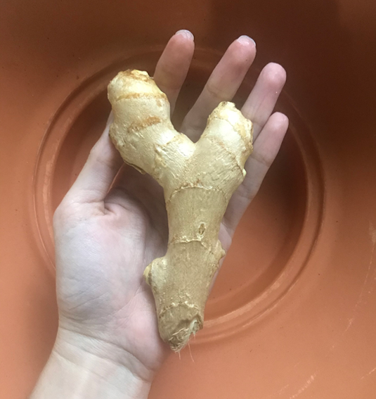
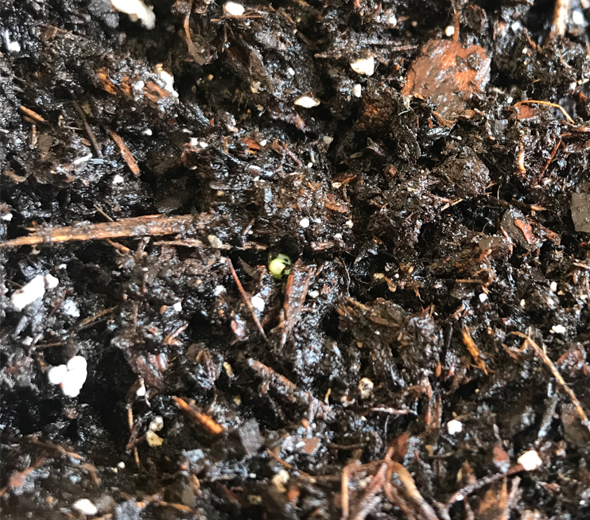
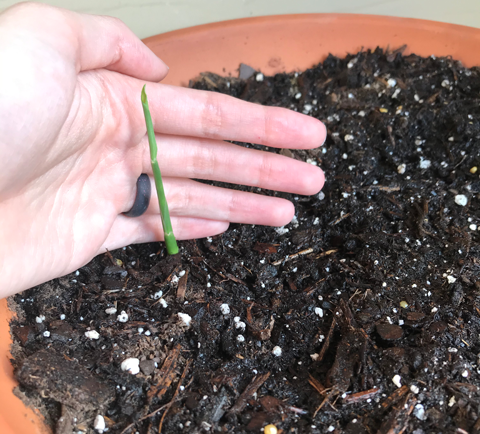

To begin my ginger growing experiment, I bought a ginger rhizome (pictured below), a wide pot, and a bag of nutrient-rich potting soil. Other things that I would need on my "ginger-journey" were water and patience.
I have always wanted to have a garden. However, I never had much luck keeping plants alive. This time I was determined to grow and keep my ginger alive. I placed my freshly potted ginger in indirect sunlight and watered it daily. I thought I would start seeing some green shooting out of the soil after just one week. I was beginning to lose hope. On Aug 18, exactly 3 weeks and 3 days after planting, I saw some green! It was just a small dot peeking out of the soil, but it was very, very exciting!
Once it had poked its head out of the soil, the little ginger shoot grew quickly. Within one week it was four inches tall! I'm very happy with how this ginger plant is growing. Hopefully it is only the first of many plants I will have in my garden one day!
